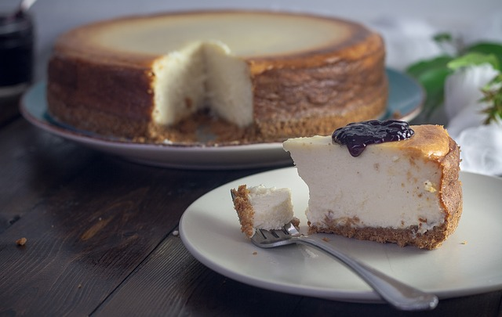

Delicious Cheesecake

Cheesecake dessert
Here are the steps and ingredients for a simple but delicious classical
cheesecake.
Ingredients:
- 1 ¾ cups HONEY MAID Graham Cracker Crumbs
- ⅓ cup butter, melted
- 3 (8 ounce) packages PHILADELPHIA Cream Cheese, softened
- 1 cup BREAKSTONE'S or KNUDSEN Sour Cream
- 2 teaspoons vanilla
- 3 medium (blank)s eggs
- 1 (21 ounce) can cherry pie filling
Steps:
- Heat oven to 350 degrees F.
-
Mix graham crumbs, butter and 1/4 cup sugar; press onto bottom of 9-inch
springform pan.
-
Beat cream cheese and remaining sugar in large bowl with mixer until
blended. Add sour cream and vanilla; mix well. Add eggs, 1 at a time,
beating on low speed after each addition just until blended. Pour over
crust.
-
Bake 1 hour to 1 hour 10 min. or until center is almost set. Run knife
around rim of pan to loosen cake; cool before removing rim. Refrigerate
cheesecake 4 hours.
- Top with pie filling before serving.
- Enjoy!
Source:
Allrecipes